© Andrei Bertescu


 printați
printați
+40 725 099 253 |
andrei.bertescu2@gmail.com |
Anii 2010-2020
În anii 2010, modelul tradițional de ciclu de viață al consolei de cinci ani a fost redus. Motivele au inclus provocarea și cheltuielile masive ale creării de console care erau grafic superioare generației actuale, Sony și Microsoft încă urmărind să recupereze costurile de dezvoltare pentru consolele lor actuale și eșecul instrumentelor de creare de conținut de a ține pasul cu cerințele crescute impuse. asupra oamenilor care creează jocurile.
Pe 14 iunie 2010, în timpul E3, Microsoft și-a dezvăluit noul Xbox 360 S sau Slim. Este mai mic și mai silentios, cu un hard disk de 250 GB și WiFi. A început livrarea către magazinele din SUA în aceeași zi și în Europa pe 13 iulie.
Grafică de înaltă definiție și hardware-ul jocurilor video
Unitățile de afișare bazate pe tuburi catodice au început să se elimine treptat în anii 2000, înlocuite cu televizoare și monitoare cu ecran plat ieftine, care aveau o rezoluție a ecranului și rate de reîmprospătare mult mai mari. Hardware-ul pentru jocuri video a început să introducă suport pentru noul standard High-Definition Multimedia Interface (HDMI), permițând rezoluții de până la 4K (3840 × 2160 pixeli), ceea ce a subliniat nevoia de carduri GPU mai puternice, cu procesoare mai rapide și memorie mai mare. Motoarele de jocuri, cum ar fi Unreal, Unity și DirectX, au adăugat suport pentru maparea texturii îmbunătățită pentru a suporta texturi de înaltă rezoluție pentru a oferi o grafică fotorealistă în jocuri.
Microsoft și Sony și-au lansat următoarele generații de console, Xbox One și PlayStation 4, în 2013. Ambele și-au extins funcțiile de pe consolele lor anterioare cu suport suplimentar pentru grafică de înaltă rezoluție și mai mult suport pentru distribuția digitală a conținutului cu spațiu de stocare suplimentar. Xbox One a avut o lansare inițială, deoarece Microsoft a dorit să solicite utilizatorilor să fie mereu conectați la Internet, împreună cu utilizarea persistentă a senzorului de mișcare Kinect, care, la rândul său, ar fi oferit anumite beneficii jucătorilor. Cu toate acestea, deciziile au fost primite cu feedback negativ în lunile anterioare lansării, cu privire la preocupările lor legate de confidențialitate, iar Microsoft și-a reînnoit politicile. Kinect, deși inițial a fost livrat cu Xbox One, a fost opțional, iar la un an după lansare, Microsoft a optat să încheie producția Kinect pentru Xbox One.
| 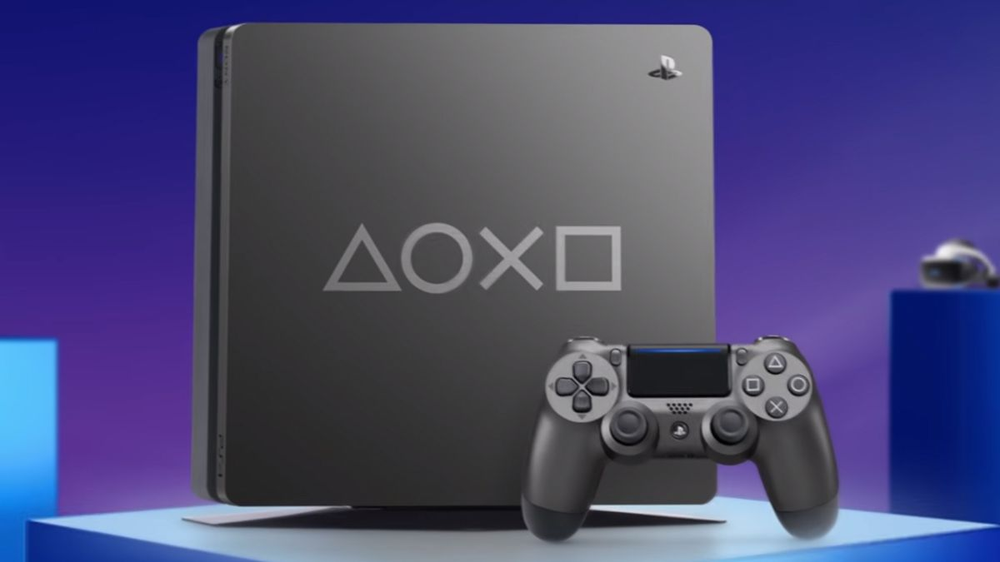 | 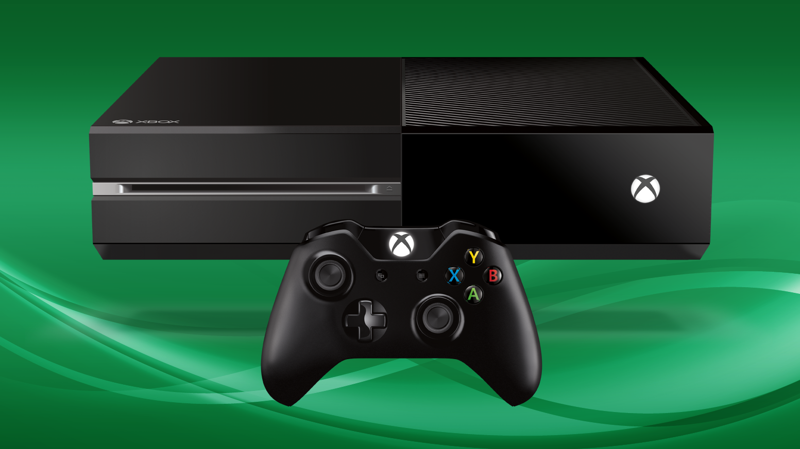 |
Nintendo
Nintendo și-a păstrat în continuare propriul drum. Compania a decis că Wii ar fi putut pierde o parte din jucătorii de bază și a dezvoltat Wii U pentru a atrage din nou acest grup. Wii U, lansat în 2012, includea un Wii U GamePad asemănător tabletei care includea comenzi și un ecran tactil care a acționat ca un al doilea ecran în timpul jocului, împreună cu suport pentru controlerele Wii Remote și a inclus compatibilitate cu jocurile Wii. Wii U a fost un eșec comercial pentru Nintendo după Wii; în timp ce Wii a vândut mai mult de 100 de milioane de unități, Wii U a vândut doar aproximativ 13 milioane în timpul vieții sale. Nintendo a atribuit acest lucru atât marketingului Wii U, care nu a reușit să clarifice scopul GamePad-ului și care i-a făcut pe consumatori să creadă că era doar un alt sistem de tabletă, cât și lipsei de suport de la terți pe consolă.
Nintendo a lucrat deja la următoarea sa consolă odată ce Wii U a fost lansat, dar a continuat să obțină o altă consolă care să fie lansată mai devreme pentru a se recupera financiar de la Wii U. Din nou, rămânând cu strategia lor din trecutul oceanului albastru de a se concentra mai degrabă pe inovație decât pe superioritatea tehnică a concurenților lor, Nintendo a lansat Nintendo Switch în 2017, una dintre primele console hibride, cu capacitatea de a fi jucată ca dispozitiv portabil, dar poate fi și plasat într-o stație de andocare conectată la un televizor și jucat ca o consolă de acasă. Switch-ul folosește Joy-Con detașabil, care funcționează atât ca controler obișnuit, cât și ca dispozitive de detectare a mișcării, cum ar fi telecomanda Wii. Alături de Switch, Nintendo a căutat asistență independantă pentru consolă atât de la studiourile triple-A, cât și de la dezvoltatori indie. Switch s-a dovedit a avea un mare succes, din 2022, este cea mai bine vândută consolă de casă de la Nintendo, succedând Wii și a ajutat-o pe Nintendo să-și recâștige poziția pe piața hardware.
Piața dispozitivelor portabile a început să scadă în anii 2010, deoarece jocurile mobile au înlocuit-o. Nintendo a continuat să perfecționeze linia DS; a lansat Nintendo 3DS în 2011, care includea un ecran cu afișaj autostereoscopic pentru a crea un efect 3D fără a fi nevoie de ochelari speciali. Sony a lansat PlayStation Vita în 2012 ca un succesor al PSP, care includea un ecran tactil frontal și un touchpad cu fața în spate pe lângă controlul existent. Vita nu a reușit să câștige o cotă semnificativă de piață și, după ce Sony a întrerupt produsul, au declarat că nu au planuri pentru alte sisteme portabile. Nintendo, pe de altă parte, a lansat o versiune modificată a Switch, Nintendo Switch Lite, în 2019. Switch Lite o versiune mai ieftină care integrează direct Joy-Con-ul în unitate și elimină alte caracteristici, astfel încât să creeze un dispozitiv care acceptă jocul portabil direct, dar în rest pe deplin compatibil cu biblioteca Switch existentă.
| 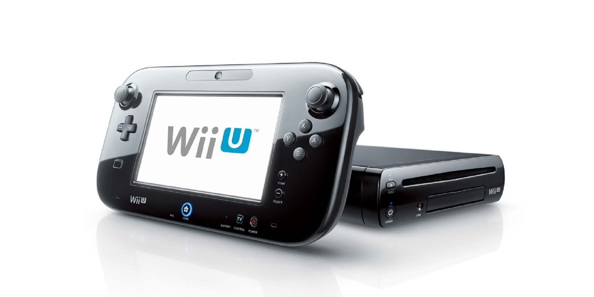 | 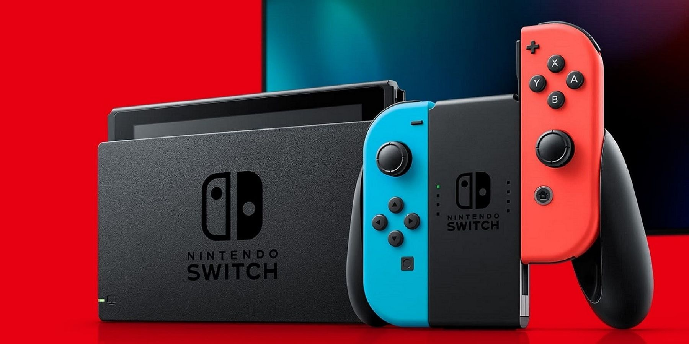 | 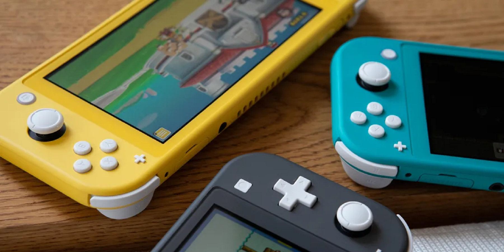 |
Alte progrese în jocurile online: joc pe mai multe platforme și jocuri în cloud
|
Jocuri mixte, virtuale și de realitate augmentată
|
| 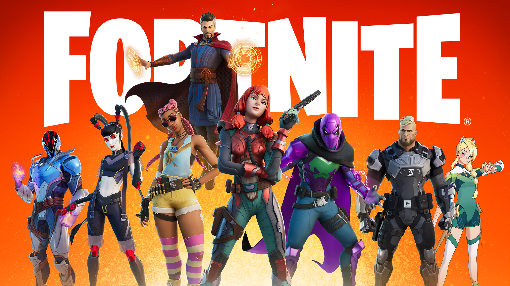 | 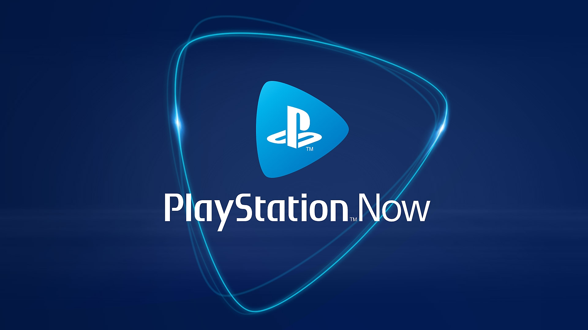 | 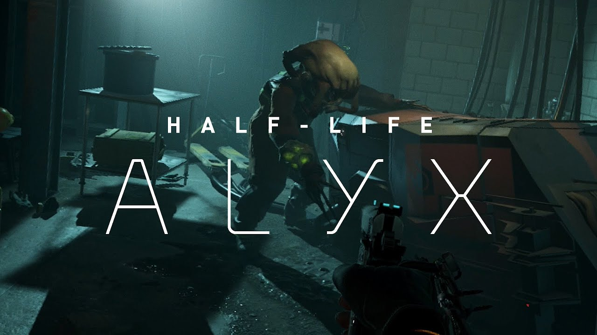 |
| 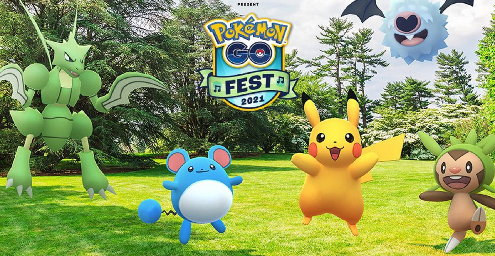 | 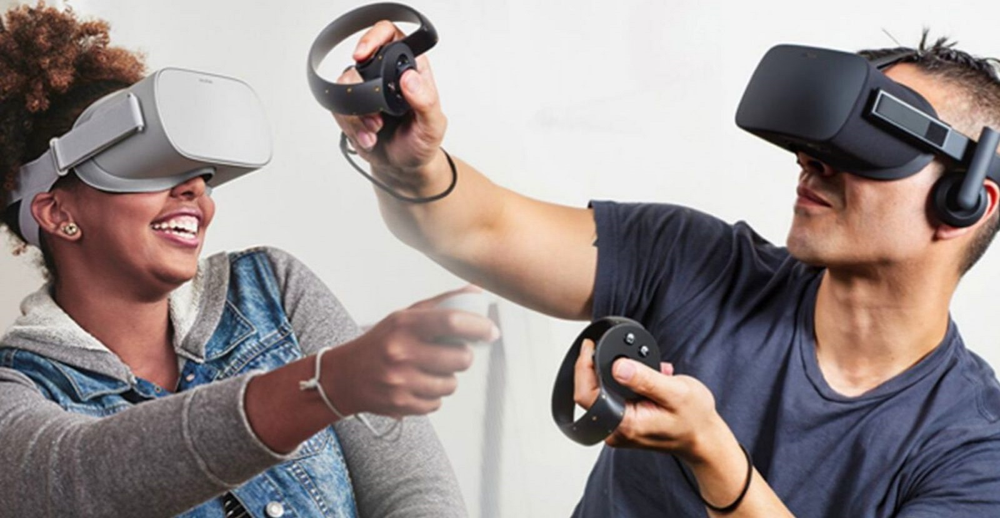 |
Noi modele de venituri pentru jocuri video
Odată cu creșterea bugetelor de dezvoltare a jocurilor triple-A, dezvoltatorii și editorii au căutat modalități de a obține venituri suplimentare pentru jocuri dincolo de prima vânzare a jocului. Mulți factori din deceniul anterior, inclusiv creșterea pieței de jocuri mobile și introducerea achizițiilor în aplicație, jocuri pe bază de abonament, cum ar fi MMO-urile și piața de distribuție digitală, au condus la noi căi de venituri recurente prin tratarea jocurilor ca pe un serviciu (GaaS).
Expansiuni mai mari și conținut descărcabil (DLC) au existat înainte de mijlocul anilor 2000, iar jucătorii s-au obișnuit cu modelul bazat pe abonament pentru MMO-uri până în acel moment. Microsoft le-a permis dezvoltatorilor să ofere microtranzacții, conținut vândut la un preț mic de obicei sub 5 dolari, pentru jocurile lor pe Xbox 360 în jurul anului 2005, unul dintre cele mai cunoscute exemple fiind un pachet de armură de cai pentru The Elder Scrolls IV: Oblivion în 2006. Deși în mare parte era un obiect cosmetic în joc, pachetul de armuri a fost unul dintre cele mai populare articole vândute pentru Oblivion până în 2009 și a cimentat ideea microtranzacțiilor.
| 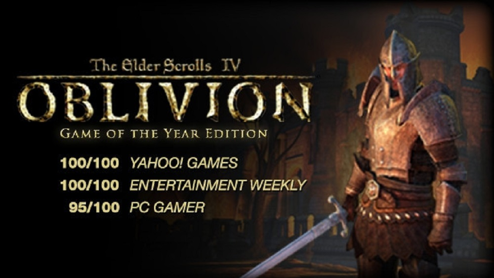 | 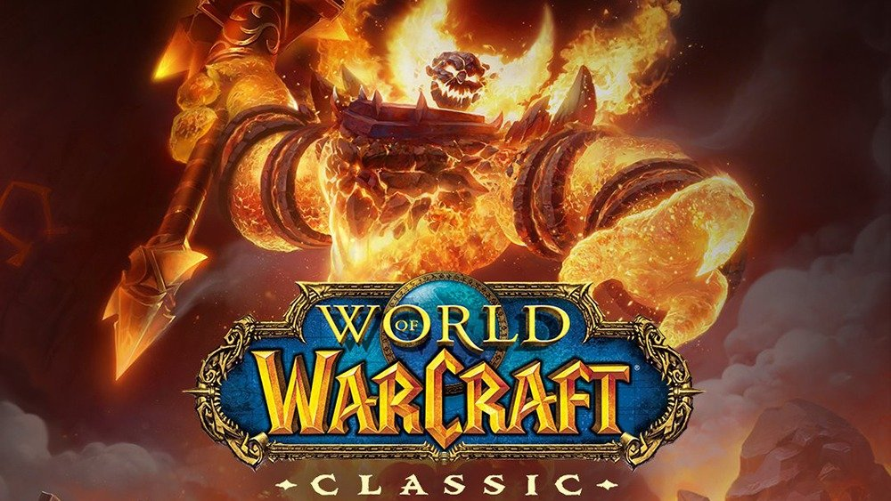 |
Jocurile care au urmat Oblivion au găsit modalități de a include conținut suplimentar de microtranzacție în jocuri pentru a extinde câștigurile per joc. Editorii care au produs jocuri cu conținut online au creat permise online speciale, cum ar fi „Project Ten Dollar” de la Electronic Arts, care necesită achiziție pentru a avea acces la funcțiile online; acest lucru era, de asemenea, destinat să blocheze vânzările secundare de jocuri. Această abordare a fost puternic criticată de consumatori și jucători și abandonați până în 2013. În schimb, editorii au oferit modelul de season-pass, apărând pentru prima dată în jocuri precum L.A. Noire și Mortal Kombat. Fără un season-pass, jucătorii ar avea în continuare acces la toate caracteristicile fundamentale ale unui joc, inclusiv jocul online, dar permisul de sezon a oferit acces la tot conținutul extins planificat pentru modurile pentru un singur jucător și noi personaje sau articole și produse cosmetice pentru modurile online, toate planificate pentru a fi lansate într-o perioadă de un an, de obicei cu o reducere în comparație cu achiziționarea fiecăruia individual. Un joc ar putea astfel să ofere season-pass-uri repetate an de an și să genereze venituri în acest fel. Un concept înrudit cu season-pass este battle-pass, introdus pentru prima dată în Dota 2. În cadrul unui battle-pass se află o serie de articole din joc pe care un jucător le poate câștiga la diferite niveluri ale battle-pass-ului, dar înainte trebuie să completeze anumite provocări pentru a câștiga nivelurile pass. Unele battle-pass-uri includ un nivel gratuit de articole, dar majoritatea includ un nivel care necesită achiziționarea permisului. Battle-pass-urile pot fi ciclate ca season-pass-urile, oferind un set nou de articole cu noi provocări în mod regulat și furnizează venituri recurente pentru un joc.
De la jocurile mobile și free-to-play, jocurile gacha deveniseră populare în Japonia până la începutul anilor 2010, bazate pe conceptul de automat de jucării cu capsule, cel mai vechi sistem cunoscut fiind în MapleStory. În joc, persoanele ar câștiga o monedă pe care ar putea-o folosi pentru a câștiga o tragere aleatorie dintr-un set de articole bazate pe o raritate prestabilită, adesea cu scopul de a colecta toate articolele pentru a obține o recompensă puternică în joc. În timp ce jucătorii ar putea câștiga mai multe monede prin acțiuni în joc, de obicei prin repetarea unor misiuni, ei ar putea, de asemenea, să câștige moneda cheltuind fonduri reale în joc. Conceptul gacha s-a extins în loot-boxes prin jocul chinezesc ZT Online și în jocurile occidentale precum FIFA 09 și Team Fortress 2 la începutul anilor 2010; jucătorii ar câștiga loot-boxes prin acțiuni din joc sau care ar putea fi achiziționate prin fonduri din lumea reală și, atunci când sunt deschise, ar conține o varietate de articole, alese aleatoriu în funcție de raritate. Până în 2016, numeroase jocuri de prestigiu au inclus mecanisme de loot-box, dar acest lucru a atras atenția guvernelor mondiale și a factorilor de decizie politică, temându-se că loot-boxes sunt prea asemănătoare cu jocurile de noroc, deoarece banii din lumea reală ar putea fi folosiți pentru a le cumpăra. Deoarece multe dintre aceste jocuri video erau destinate minorilor, unele țări au adoptat legi care interziceau sau restricționau jocurile cu mecanisme de loot-box datorită naturii lor de jocuri de noroc. Împreună cu implementarea slabă a mecanismelor cutiei de pradă în Star Wars Battlefront II și în modul de joc FIFA Ultimate Team de la Electronic Arts, mecanica loot-box-ului a început să-și piardă din favoarea consumatorilor până la sfârșitul anilor 2010.
| 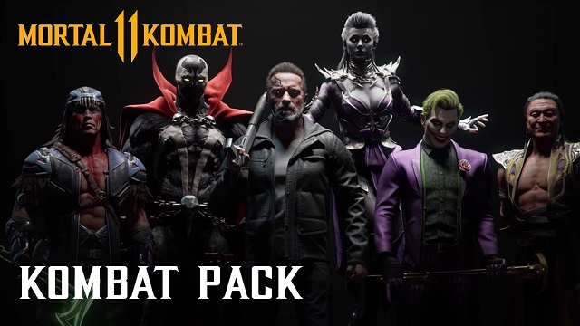 | 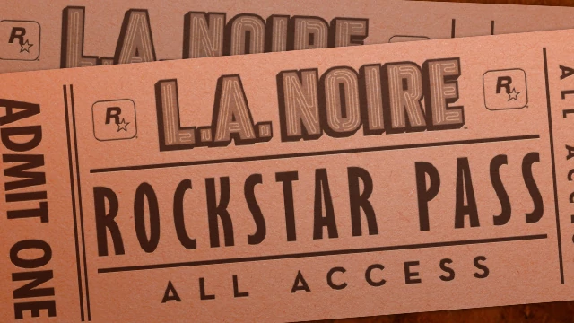 | 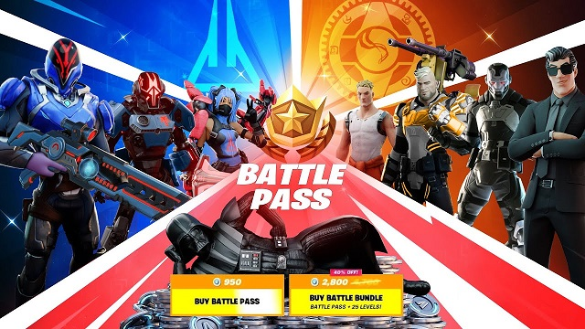 |
| 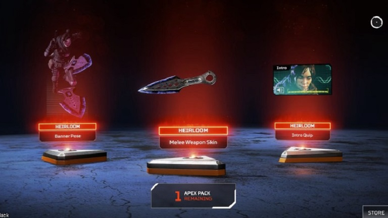 | 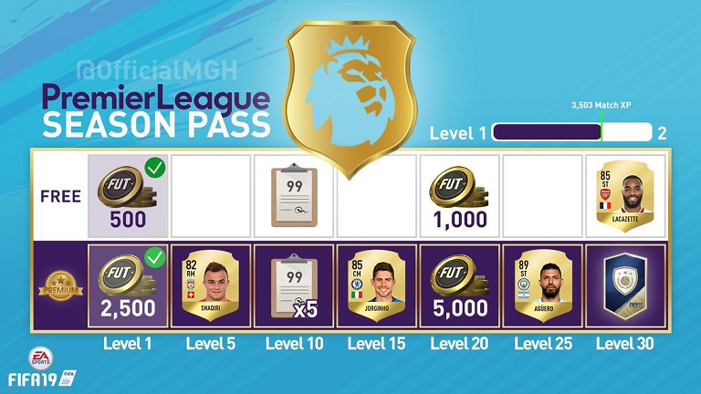 | 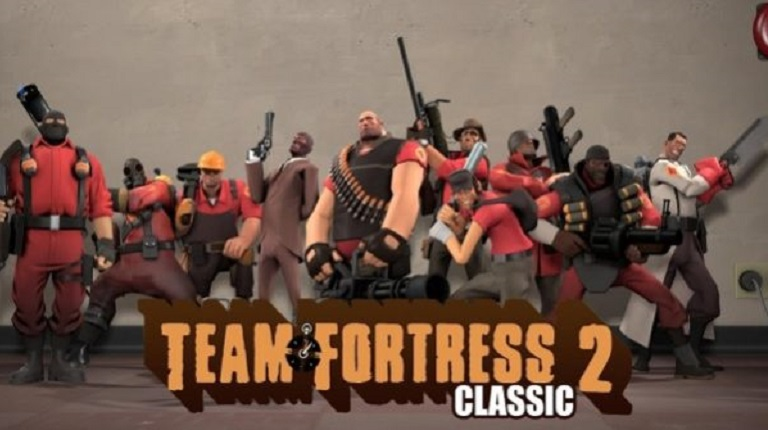 | 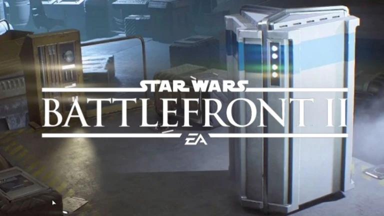 |